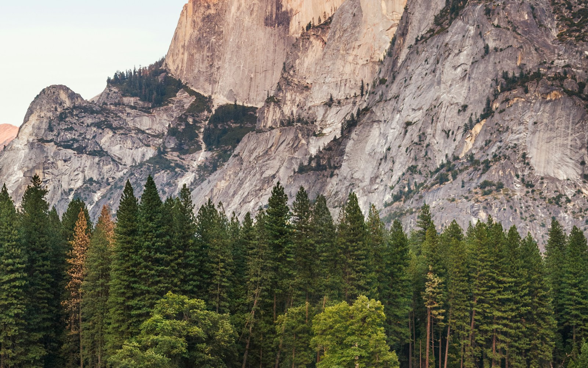

01 / 行走
不赶路的清晨
早一点出门，街道还没有完全醒来。沿着熟悉的路走慢一些，会发现树影每天都落在不同的位置。散步不必有一个郑重的目的地，走到想回家的时候，就转身。
给早晨留二十分钟。
观察 / 行走 / 记录
留一点时间给山野，也留一点耐心给寻常的生活。

01 / 行走
早一点出门，街道还没有完全醒来。沿着熟悉的路走慢一些，会发现树影每天都落在不同的位置。散步不必有一个郑重的目的地，走到想回家的时候，就转身。
给早晨留二十分钟。
02 / 山野
停下脚步以后，森林才开始变得热闹。风擦过叶片，水从石缝间流过，远处偶尔传来鸟鸣。不急着拍照，也不忙着说话，把这一段安静完整地留在记忆里。
带走垃圾，留下安静。
03 / 日常
记录不一定要从完整的故事开始。可以是一种天气、一顿热饭，或者今天读到的一句话。那些当时看起来微不足道的小事，日后翻起来，往往最能让人想起某一天。
写下今天记得的一件小事。
ABOUT THIS JOURNAL
这里收集关于自然与生活的短篇文字。愿我们在忙碌之外，仍能注意到季节的变化、窗外的光，以及脚下正在经过的路。
回到开头